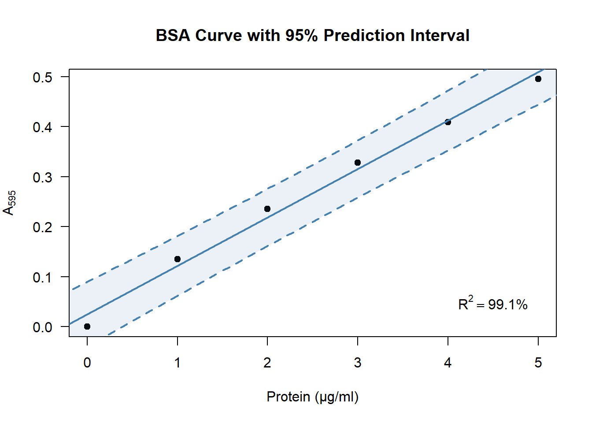
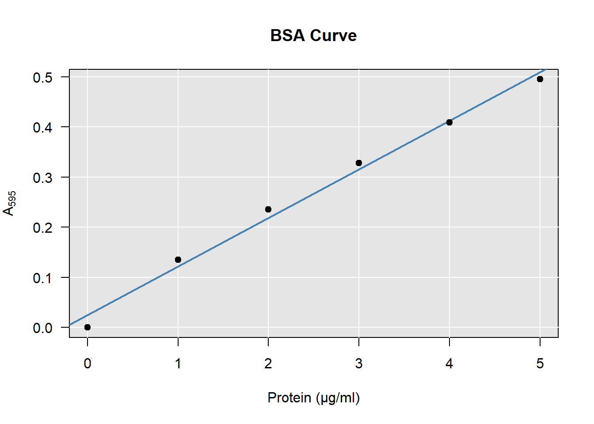

Chapter 4 Bradford Assay
Date: 2/3 November 2021
Topic: Estimation, Prediction
Duration: 30–90 min.
In this chapter you will learn how to conduct a Bradford assay for estimating the amount of protein present in a sample.
From this chapter on, you will collect all your analyses into a portfolio. This is simply an R markdown file that you knit to Word at the end of each chapter. At the start of the statistics course at the end of the academic year, your portfolio should contain all the exercises of chapters 4–6.
Remember, to make a new R markdown file, go to File > New File > R markdown. Then select Word and press OK.
4.1 What Is a Bradford Assay?
In the basic practicals you will use a spectrophotometer to measure light passing through a sample with a known protein concentration. By doing so for various concentrations of protein, you can construct a curve for the amount of protein present in a sample, given the amount of light passing through. This is a basic tool in biological experimentation. The protein used as a reference to construct the curve is called Bovine Serum Albumin (BSA).3 Hence the name: BSA curve.
| BSA \((\mu\text{g})\) | Absorption \((\text{A}_{595})\) |
|---|---|
| 0 | 0.000 |
| 1 | 0.135 |
| 2 | 0.235 |
| 3 | 0.328 |
| 4 | 0.409 |
| 5 | 0.495 |
Figure 4.1: A typical BSA curve, constructed from the data in table 4.1.
In the first part of this assignment, you will construct a BSA-curve based on your experimental data. In the second half, we are going to express the uncertainty of the estimation.
4.2 How to Contruct a BSA-Curve in R
As an example, I will show you how to construct a BSA curve from the data shown in table 4.1.
4.2.1 Enter your data
First we create a data frame containing the BSA amounts and the observed \(\text{A}_{595}\) values.
BSA <- 0:5
A595 <- c(0, 0.135, 0.235, 0.328, 0.409, 0.495)
DF <- data.frame(BSA, A595)This will create an object DF in the object space. You can view it by clicking on it in the environment tab of the upper-right pane in RStudio.
4.2.2 Fit a Simple Linear Model
Watch the first two minutes of this video on simple linear regression.
Question:
- A Bradford assay shows a [positive / negative] linear relationship between the amount of protein and the absorbance. (Choose one.)
- Describe in your own words what intercept & slope mean.
- Enter your data in R as shown above, using your own experimental data.
- Estimate the intercept and slope as follows:
model <- lm(A595 ~ BSA, data = DF)How that works will be explained in the statistics course. For now, let’s extract the intercept and slope from this model:
coef(model)## (Intercept) BSA
## 0.02485714 0.09685714In this example, the estimated line pretty much goes through the origin,4 with an intercept of about 0.02. We can also see that there is a positive linear relationship between the amount of BSA and the absorbance: For every microgram of BSA added, the absorbance increases by about 0.1.
Question:
- What are the intercept and slope of your experimental data?
4.2.3 Plot your data & draw a line
Finally we create a plot and add a line as follows:
plot(A595 ~ BSA, data = DF)
abline(coef(model))
As you can see in the example here, though it looks a bit basic, this is all you need to produce a BSA curve. Of course you can improve your figure if you want, by using more advanced plotting routines.
Question:
- Create the plot shown above using your own experimental data.
4.3 Using a Bradford Assay for Estimation
Let’s say you measured the absorbance of the sample of interest and ended up with a value of \(\text{A}_{595} = 0.264\). Using the BSA curve, you can estimate the amount of protein as shown in the figure below:
Figure 4.2: To estimate the amount of protein, look at the \(\text{A}_{595}\) on the y-axis, then see which position it corresponds to on the x-axis.
Apparently the sample of interest has the same absorbance as a BSA sample of about \(2.5\) microgram.
If you want a more precise estimate, you have to use the equation of the model we just fitted:
\[\begin{equation} \text{A}_{595} = \text{intercept} + \text{slope}\times\text{BSA} \tag{4.1} \end{equation}\]
If we fill in the example, we get:
\[ \begin{aligned} 0.264 &= 0.02485714 + 0.09685714 \times \text{BSA} + 0 \\ \\ \text{BSA} &= \frac{0.264 - 0.02485714}{0.09685714} \approx 2.47 \end{aligned} \]
Which is approximately equal to the \(2.5\) we read from figure 4.2.
Question:
- Can you read from your own figure the amount of protein in the sample of interest?
- Perform the estimation using eq. (4.1) with your own BSA curve and your own observed absorbance:
- If you have performed the experiment twice or more, you can average the absorbance for a more precise answer;
- Make sure to adjust for any dilution you applied to the sample.
4.4 How Precise Is the Estimate?
I’m sure you’ve noticed that the observations do not exactly fall on the line. The regression model is but an approximation of the true relationship. This is caused by many things:
- No matter how careful you are, the amount of BSA cannot be weighed exactly;
- The spectrophotometer does not have infinite precision;
- Any dilutions applied can introduce small errors;
- The true relationship is probably not perfectly linear.
It is more than likely that if you perform the experiment again, you will obtain slightly different values. Even if you take great care, there is always uncertainty. At best, you can keep that uncertainty low.
So how much uncertainty is there? How do we express that? Below I will discuss a simple measure to include in your plot, and a great way to visualize the uncertainty.
4.4.1 R-squared
\(R^2\) is the amount of variance explained by the model. In other words: How much of the total variance in \(\text{A}_{595}\) can be explained by the line?
The red segments on the right represent the original spread in \(\text{A}_{595}\),5 and on the right we see the spread that is left after accounting for our model. You can clearly see that the distances on the right are much smaller than on the left. If you square these segments and sum them, that is called the variance. \(R^2\) is then calculated as:
\[R^2 = 1 - \frac{\text{remaining variance}}{\text{total variance}}\]
R includes this value in the summary of a linear model by default. You can obtain it as follows:
summary(model)$r.squared## [1] 0.9913461Apparently the BSA curve explains around \(99.1\%\) of the total variance in absorbance. This is quite a large amount: Only \(0.9\%\) of the variance is unexplained. A higher \(R^2\) value means there is less uncertainty.
Question:
- What is the value of \(R^2\) using your own experimental data?
- How could you obtain a higher \(R^2\)?
4.4.2 Prediction interval
Where would you expect 95% of the future observations of \(\text{A}_{595}\) to be? That is the question a 95% prediction interval answers. Though its calculation is beyond the scope of this chapter, generating such an interval along the BSA curve in R can be done in a few lines of code:
plot(A595 ~ BSA, data = DF)
abline(coef(model))
newX <- data.frame(BSA = seq(0, 5, 0.1)) # 0.0, 0.1, ..., 4.9, 5.0
newY <- data.frame(predict(model, newX, interval = "predict"))
newDF <- cbind(newX, newY)
lines(lwr ~ BSA, data = newDF) # lower bound of the interval
lines(upr ~ BSA, data = newDF) # upper bound of the interval
Question:
- Produce a prediction interval for your own BSA curve? Try it by copying the code above and adjusting it if you like.
- Figure 4.2 showed how to estimate the protein concentration of a sample of interest. Now that you have a prediction interval around the line, within which values do you expect the protein concentration to be?
4.5 Improving Your Figure (*)
In the examples so far, I tried to keep the coding part simple. Here I will show how to reproduce the figure by expanding the code a bit. You can use whichever parts you like and change it. Using a hashtag (#), I will provide comments after each line to explain what it’s for. For additional tips on improving figures and adding them to your portfolio, see the chapter on adding figures.
4.5.1 Improving the main plot
Using some tricks described in the help page of plotmath, you can add proper annotation to your axes:
plot(
A595 ~ BSA, data = DF, # A595 vs BSA, from data set DF
main = "BSA Curve", # Title
xlab = "Protein (μg/ml)", # X-axis annotation
ylab = bquote(A[595]), # Y-axis annotation
pch = 19, # Solid point character (see ?pch)
las = 1 # Set label style to horizontal
)4.5.2 Highlighting the line
For emphasis, I changed the width and color of the line:
# Add this *after* your call to the plot function. Then run both.
abline(
coef(model), # Coefficients from the object 'model'
lwd = 2, # Increase line width to 2 (default 1)
col = "steelblue" # Change the color of the line
)4.5.3 Adding a grid
You can add a grid if you like. If you do, keep these three things in mind:
- Don’t use
grid. This function is so dumb even its help page admits you’re better off usingabline(h = ..., v = ...):
Figure 4.3: Look closely at how the grid meets the axes on the left…
# Bad example:
plot(A595 ~ BSA, data = DF, main = "wow great job, grid...")
grid(nx = 5, ny = 5)
abline(coef(model))
# Good example:
plot(A595 ~ BSA, data = DF, main = "abline to the rescue")
abline(h = seq(0, 0.5, 0.1), v = 0:5, col = "lightgray")
abline(coef(model))- Some prefer light on dark, others dark on light. I don’t mind either way. But avoid using a high contrast for your grid. It is not the main subject being plotted and should fall into the background:
Figure 4.4: A grid should have low contrast to avoid crowding the plot.
To add a colored background to your plot, insert the following line after the call to plot:
# Add this *after* your call to the plot function.
rect(par("usr")[1], par("usr")[3], par("usr")[2], par("usr")[4], col = "grey90")Then draw your grid in white:
# Add this *after* your call to the rect function.
abline(h = seq(0, 0.5, 0.1), v = 0:5, col = "white")- When adding anything to a base R plot, R draws on top of the existing plot. That means it looks more professional if you redraw the points on top of the rest. Your full code for the plot then looks something like this:
# Coordinate system:
plot(
A595 ~ BSA, data = DF,
main = "BSA Curve",
xlab = "Protein (μg/ml)",
ylab = bquote(A[595]),
las = 1
)
# Background:
rect(par("usr")[1], par("usr")[3], par("usr")[2], par("usr")[4], col = "grey90")
# Grid:
abline(h = seq(0, 0.5, 0.1), v = 0:5, col = "white")
# BSA curve:
abline(coef(model), lwd = 2, col = "steelblue")
# Observations redrawn:
points(A595 ~ BSA, data = DF, pch = 19)
4.6 Alternative Method (*)
It is a bit awkward to first fit a model that predicts the \(\text{A}_{595}\), and then invert the formula to obtain predictions for the amount of protein, like we did with eq. (4.1). Unfortunately, this is the standard procedure in biology.
- In this optional exercise, you are going to do it the correct way from a statistical point of view:
- Start from the beginning and fit a linear model where the amount of protein is the outcome, rather than the absorbance (
lm(BSA ~ A595, data = DF)); - Go through the chapter again, adjusting the code where needed with this inverted model;
- Does your prediction differ from the previous one? Why do you think that happens?